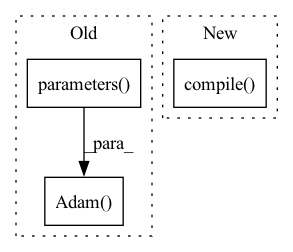

Pattern ID :18146

Before Change
self.dropout = Dropout(p=dropout)
self.loss_fn = torch.nn.CrossEntropyLoss()
self.optimizer = optim.Adam(self.parameters(), lr=lr,
weight_decay=weight_decay)
def forward(self, inputs):
x, g, indx = inputs
After Change
self.layers.append(GraphConv(inc, out_channels))
self.dropout = Dropout(p=dropout)
self.compile(loss=torch.nn.CrossEntropyLoss(),
optimizer=optim.Adam(self.parameters(), lr=lr,
weight_decay=weight_decay),
metrics=Accuracy())
def forward(self, inputs):
x, g, indx = inputs
In pattern: SUPERPATTERN
Frequency: 3
Non-data size: 3
Instances
Fragment ID: 59506041
Project Name: edisonleeeee/graphgallery
Commit Name: fd95793862341bcc485305ee2528394c25d3af38
Time: 2020-11-27
Author: cnljt@outlook.com
File Name: graphgallery/nn/models/dgl_torch/gcn.py
M Class Name: GCN
N Class Name: GCN
M Method Name: __init__(9)
N Method Name: __init__(9)
M Parent Class: TorchKeras
N Parent Class: TorchKeras
M File Name: graphgallery/nn/models/dgl_torch/gcn.py
N File Name: graphgallery/nn/models/dgl_torch/gcn.py
M Start Line: 35
M End Line: 37
N Start Line: 36
N End Line: 39
'>
Before Change
lr=args.learning_rate,
)
else:
optimizer = torch.optim.Adam(
filter(lambda p: p.requires_grad, self.model.parameters()),
lr=args.learning_rate,
weight_decay=args.weight_decay,
amsgrad=True,
)
epoch_loss = []
for epoch in range(args.epochs):
batch_loss = []
After Change
name="Adam"
)
self.model.compile(optimizer=optimizer, loss=["sparse_categorical_crossentropy"], metrics=["accuracy"])
epoch_loss = []
accuracy = 0.0
for epoch in range(args.epochs):
'>
Fragment ID: 59506040
Project Name: fedml-ai/fedml
Commit Name: 51350e5aa8f340f92f5a5ff1f2f88cd9ab1fe47f
Time: 2022-08-14
Author: alexliang.kh@gmail.com
File Name: python/examples/cross_silo/tf-mqtt_s3_fedavg_mnist_lr_example/tf_model_trainer_classification.py
M Class Name: TfModelTrainerCLS
N Class Name: TfModelTrainerCLS
M Method Name: train(4)
N Method Name: train(4)
M Parent Class: ClientTrainer
N Parent Class: ClientTrainer
M File Name: python/examples/cross_silo/tf-mqtt_s3_fedavg_mnist_lr_example/tf_model_trainer_classification.py
N File Name: python/examples/cross_silo/tf-mqtt_s3_fedavg_mnist_lr_example/tf_model_trainer_classification.py
M Start Line: 16
M End Line: 59
N Start Line: 16
N End Line: 44
'>
Before Change
lr=args.learning_rate,
)
else:
optimizer = torch.optim.Adam(
filter(lambda p: p.requires_grad, self.model.parameters()),
lr=args.learning_rate,
weight_decay=args.weight_decay,
amsgrad=True,
)
epoch_loss = []
for epoch in range(args.epochs):
batch_loss = []
After Change
name="Adam"
)
self.model.compile(optimizer=optimizer, loss=["sparse_categorical_crossentropy"], metrics=["accuracy"])
epoch_loss = []
accuracy = 0.0
for epoch in range(args.epochs):
'>
Fragment ID: 59506039
Project Name: fedml-ai/fedml
Commit Name: 9e66b6521a89e76f568a18fc69f0e6cf7c3c6166
Time: 2022-08-14
Author: alex.gpt.llm@gmail.com
File Name: python/examples/cross_silo/tf-mqtt_s3_fedavg_mnist_lr_example/tf_model_trainer_classification.py
M Class Name: TfModelTrainerCLS
N Class Name: TfModelTrainerCLS
M Method Name: train(4)
N Method Name: train(4)
M Parent Class: ClientTrainer
N Parent Class: ClientTrainer
M File Name: python/examples/cross_silo/tf-mqtt_s3_fedavg_mnist_lr_example/tf_model_trainer_classification.py
N File Name: python/examples/cross_silo/tf-mqtt_s3_fedavg_mnist_lr_example/tf_model_trainer_classification.py
M Start Line: 16
M End Line: 59
N Start Line: 16
N End Line: 44